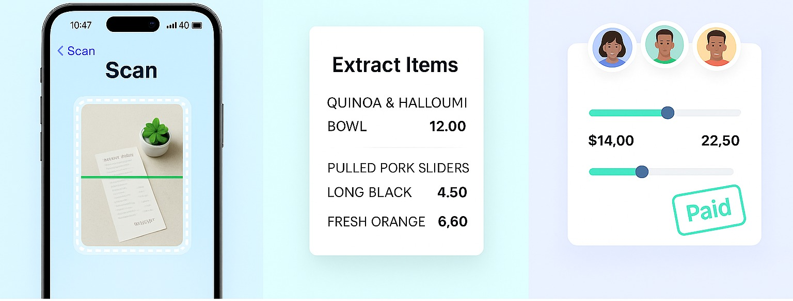
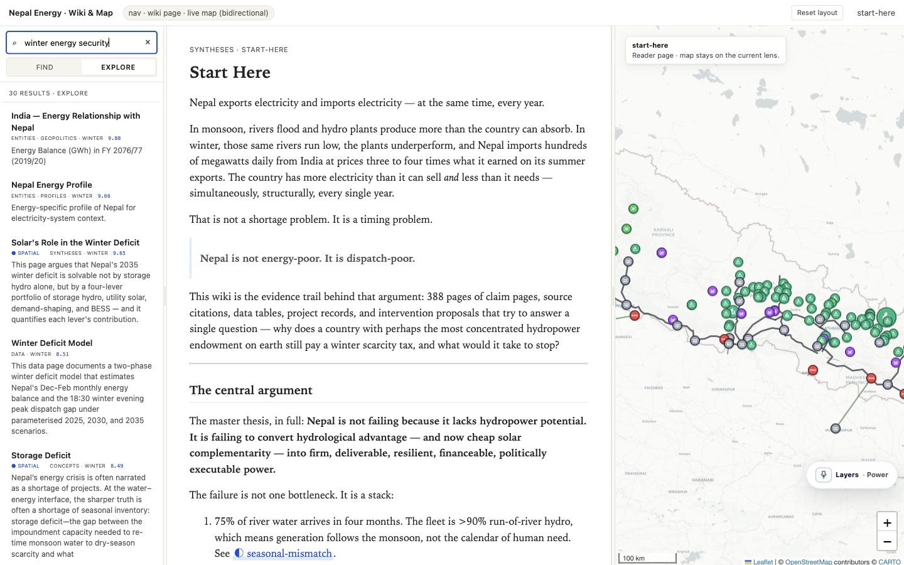
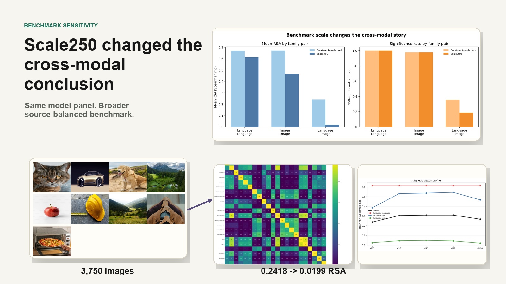
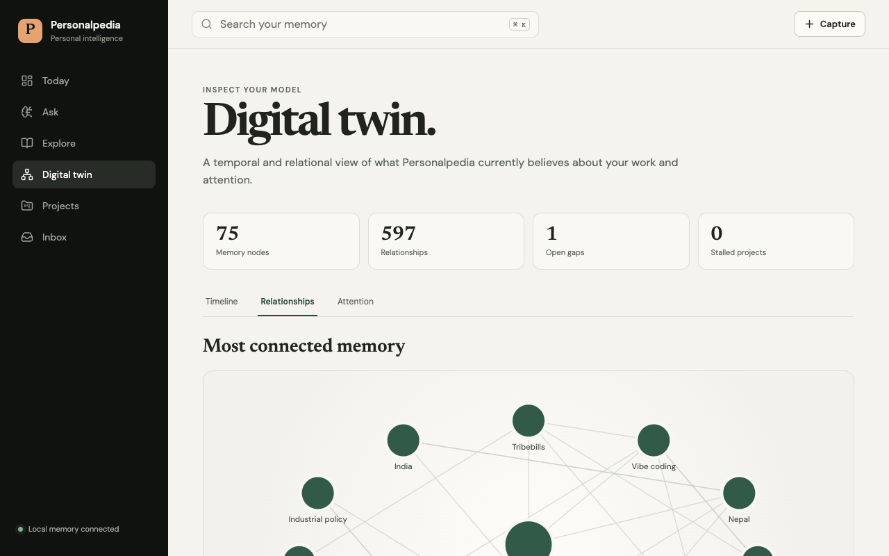

Scope the real constraint.
Discovery starts in the workflow, not the ticket. The binding constraint is usually upstream of the requested feature.
Sydney — accepting deployments · FD / AI systems / product engineering
Forward deployed AI engineer
Work / 01—03
TribeBills (fintech, web + iOS). TransparentGov (a governed evidence platform). Scale250 (a measurement program across 25 models).

A live shared-expense product across web and iOS, with multimodal receipt extraction, exact-cent splitting, payment verification, and graceful degradation.

TransparentGov turns reports, registries, datasets, and maps into inspectable answers with their source trails attached. Nepal's electricity system is its first production vertical.

A three-round home-lab research program measuring whether models trained on very different data independently form the same internal geometry of concepts.
Standard of work / 04
I'm most useful where product, engineering, AI, and the customer's real operating environment meet.
Discovery starts in the workflow, not the ticket. The binding constraint is usually upstream of the requested feature.
Structured outputs, allowlists, editable review, deterministic rules — model behavior held within tolerance.
Timeouts, circuit breakers, manual fallbacks, health signals. Recovery designed before it is needed.
Benchmarks, holdouts, regression suites. Every improvement is a measured change, not a claimed one.
Agent infrastructure / 05
A local-first knowledge layer that exposes typed Markdown as tools, allowing agents to carry sources, decisions, and relationships across sessions.

Writing / field notes
Architecture notes, research methods, production lessons, and longer explanations of what changed after the first result or prototype.
Read technical writing ↗Context / 06
Sydney-based engineer across product, backend, interface, data, deployment, and evaluation — usually all of them on the same system. Python and TypeScript in production.
More about how I got here ↗